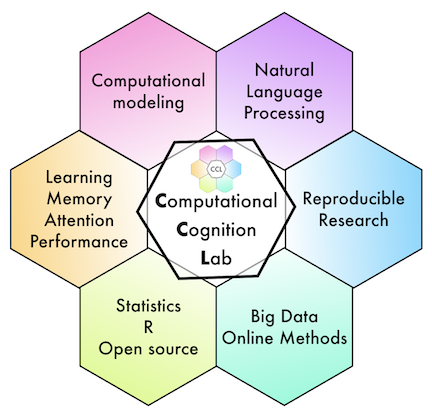

<!DOCTYPE html>
<html>
  <head>
    <title>My test experiment</title>
    <script src="large_stimlist.js"></script>
    <script src="jspsych/dist/jspsych.js"></script>
    <script src="jatos.js"></script>
    <script src="index_files/header-attrs-2.11/header-attrs.js"></script>
    <script src="jspsych/dist/plugin-html-keyboard-response.js"></script>
    <script src="jspsych/dist/plugin-html-button-response.js"></script>
    <script src="jspsych/dist/plugin-html-typing-response.js"></script>
    <script src="jspsych/dist/plugin-external-html.js"></script>
    <script src="jspsych/dist/plugin-image-keyboard-response.js"></script>
    <script src="jspsych/dist/plugin-survey-html-form.js"></script>
    <script src="jspsych/dist/plugin-survey-text.js"></script>
    <script src="jspsych/dist/plugin-canvas-keyboard-response.js"></script>
    <script src="jspsych/dist/plugin-preload.js"></script>
    <script src="jspsych/dist/plugin-browser-check.js"></script>
    <link href="jspsych/dist/jspsych.css" rel="stylesheet" type="text/css" />
    <link href="custom.css" rel="stylesheet" type="text/css" />
  </head>
  <body></body>

  <script type="text/javascript">
    // jatos parameters
    // check for sona

    var run_simulation = false;
    var run_jatos = true;
    var participant_type = "NA";

    if(run_jatos === true){
      jatos.onLoad(function() {

        /* check for SONA system participant */
        if (window.jatos && jatos.urlQueryParameters.SONA_ID) {
            console.log('Sona information is available');
            sona_participant_id = jatos.urlQueryParameters.SONA_ID;
            jsPsych.data.addProperties({ID: sona_participant_id});
            participant_type = "SONA";
        } else {
            console.log('Sona information is not available (setting value to -1)');
            sona_participant_id = -1;
        }
        console.log('sona_participant_id = ' + sona_participant_id);

      });
    }

    // initialize JsPsych

    const jsPsych = initJsPsych({
      show_progress_bar: true,
      on_finish: () => {

        if (run_jatos === true){
          var resultJson = jsPsych.data.get().json();
          jatos.submitResultData(resultJson, jatos.startNextComponent);

        } else {

        jsPsych.data.displayData();
        }
      }
    });
</script>

  <script>

    // sample stimuli from larger list

    // get high and low likeable items
    var high_likeable = large_stimlist.filter(x => x.likeable_type === "high");
    var low_likeable = large_stimlist.filter(x => x.likeable_type === "low");

    // randomly select 50 each
    let select_high = jsPsych.randomization.shuffle(high_likeable).slice(0,50);
    let select_low = jsPsych.randomization.shuffle(low_likeable).slice(0,50);

    let words_per_list = 12;

    // define the stimuli for each trial of the study phase

    let study_stimuli = [];

    let study_instructions = [Array(words_per_list).fill('case'), Array(words_per_list).fill('semantic'), Array(words_per_list).fill('self')].flat();
    let letter_case = Array(3*3).fill(["upper","upper","lower","lower"]).flat();
    let likeable = Array(6*3).fill(["high","low"]).flat();
    let encoding_recall = Array(3).fill(["recall","recall","recall","recall","recall","recall","no_recall","no_recall","no_recall","no_recall","no_recall","no_recall"]).flat();

    for(i=0; i<study_instructions.length; i++){

      // get study word from high or low likeable list
      if (likeable[i] == "high") {
          var target_word = select_high[i].Word;
        }

      if (likeable[i] == "low") {
          var target_word = select_low[i].Word;
        }

      //change case if upper, otherwise leave as lower case

      if (letter_case[i] == "upper") {
         target_word = target_word.toUpperCase();
      }

      //write questions

      if(study_instructions[i] == "case"){
        var question = `<div>
        <p> Is the following word written in upper case? </p>
        </div>`;

        var stimulus = `<div>
        <p> Is the following word written in upper case? </p>
        <p> ${target_word} </p>
        </div>`;

      }

      if(study_instructions[i] == "semantic"){
        var question = `<div>
        <p> Does the following word have a positive meaning? </p>
        </div>`;

        var stimulus = `<div>
        <p> Does the following word have a positive meaning? </p>
        <p> ${target_word} </p>
        </div>`;

      }

      if(study_instructions[i] == "self"){

        var question = `<div>
        <p> Would you use the following word to describe yourself? </p>
        </div>`;

        var stimulus = `<div>
        <p> Would you use the following word to describe yourself? </p>
        <p> ${target_word} </p>
        </div>`;

      }

      study_stimuli.push({
        stimulus: stimulus,
        question: question,
        study_instruction: study_instructions[i],
        letter_case: letter_case[i],
        likeable: likeable[i],
        target_word: target_word,
        encoding_recall: encoding_recall[i]
      });

    }

    // Create blocked lists
    // Randomize items within each list
    // Randomize order of blocks

    let case_study = study_stimuli.filter(obj => {return obj.study_instruction === "case"});
    let semantic_study = study_stimuli.filter(obj => {return obj.study_instruction === "semantic"});
    let self_study = study_stimuli.filter(obj => {return obj.study_instruction === "self"});

    let blocked_study = [ jsPsych.randomization.shuffle(case_study),jsPsych.randomization.shuffle(semantic_study),jsPsych.randomization.shuffle(self_study) ];
    blocked_study = jsPsych.randomization.shuffle(blocked_study).flat();

    // Create mixed list

    let mixed_study = jsPsych.randomization.shuffle(study_stimuli);

    // create filler items

    filler_stimuli = [];

    let filler_study_instructions = Array(2).fill(['case','semantic','self']).flat();

    for(i=0; i<6; i++){

      // get study word from high or low likeable list
      if (likeable[i] == "high") {
          var target_word = select_high[i+36].Word;
        }

      if (likeable[i] == "low") {
          var target_word = select_low[i+36].Word;
        }

      //change case if upper, otherwise leave as lower case

      if (letter_case[i] == "upper") {
         target_word = target_word.toUpperCase();
      }

      //write questions

      if(filler_study_instructions[i] == "case"){

        var question = `<div>
        <p> Is the following word written in upper case? </p>
        </div>`;

        var stimulus = `<div>
        <p> Is the following word written in upper case? </p>
        <p> ${target_word} </p>
        </div>`;

      }

      if(filler_study_instructions[i] == "semantic"){

        var question = `<div>
        <p> Does the following word have a positive meaning? </p>
        </div>`;

        var stimulus = `<div>
        <p> Does the following word have a positive meaning? </p>
        <p> ${target_word} </p>
        </div>`;

      }

      if(filler_study_instructions[i] == "self"){

        var question = `<div>
        <p> Would you use the following word to describe yourself? </p>
        </div>`;

        var stimulus = `<div>
        <p> Would you use the following word to describe yourself? </p>
        <p> ${target_word} </p>
        </div>`;

      }

      filler_stimuli.push({
        stimulus: stimulus,
        question: question,
        study_instruction: filler_study_instructions[i],
        letter_case: letter_case[i],
        likeable: likeable[i],
        target_word: target_word,
        encoding_recall: "no_recall"
      });

    }

    let filler_start_stimuli = filler_stimuli.slice(0,3);
    let filler_end_stimuli = filler_stimuli.slice(3,6);


///////////////////////////////////////
    // Random subject ID
    var rand_subject_id = jsPsych.randomization.randomID(16);
    jsPsych.data.addProperties({ID: rand_subject_id});
    let block_type = jsPsych.randomization.shuffle(["blocked","mixed"])[0];
    jsPsych.data.addProperties({block_type:  block_type});

    /*Browser Check */
    var browser_check = {
      type: jsPsychBrowserCheck
    };

     /* define Welcome */
    var welcome = {
      type: jsPsychHtmlButtonResponse,
      stimulus: `
      
      <p>Welcome, this experiment requires your full attention for approximately 15 minutes.</p>
<p><b>Important: This study can only be completed once. Reloading or pressing the back button will stop the study.</b></p>
<p><b>Please complete this study on a desktop or laptop using Chrome or Firefox.</b></p>
<p>Continue to consent form and instructions</p>
      `,
      choices: ["Continue"],
      css_classes: ["instruction_display"],
      post_trial_gap: 500
    };

    /* Function to process consent */
    var check_consent = function(elem) {
        if (document.getElementById('consent_checkbox').checked) {
            return true;
        }
        else {
            alert("If you wish to participate, you must check the box next to the statement 'I agree to participate in this study.'");
            return false;
        }
        return false;
    };

    /* show consent */
    const consent = {
      type: jsPsychExternalHtml,
      url: 'consent/consent.html',
      cont_btn: "start",
      check_fn: check_consent
    };

    const demographics = {
      type: jsPsychSurveyHtmlForm,
      preamble: `<p>We are collecting basic demographic information as a part of this study</p>
      <p>Please answer the following questions: </p>`,
      html: `<label for="age">Age (enter or select a number):</label>
    <input type="number" id="age" name="age" min="1" max="100" />
    <br> <br>
    <label for="sex-select">What is your sex?</label>
    <select name="sex" id="sex-select">
        <option value="">choose</option>
        <option value="female">Female</option>
        <option value="male">Male</option>
    </select>
    <br> <br>
    <label for="hand-select">What is your handedness?</label>
    <select name="hand" id="hand-select">
        <option value="">choose</option>
        <option value="Left">Left</option>
        <option value="Right">Right</option>
        <option value="Both">Both</option>
    </select>
    <br> <br>
    <label for="vision-select">How is your vision?</label>
    <select name="vision" id="vision-select">
        <option value="">choose</option>
        <option value="Normal">Normal vision</option>
        <option value="Corrected">Corrected-to-normal vision</option>
        <option value="Impaired">Impaired vision</option>
    </select>
    <br> <br>
    <label for="english-select">What is your English ability?</label>
    <select name="english" id="english-select">
        <option value="">choose</option>
        <option value="First">First-language</option>
        <option value="Second">Second-language</option>
        <option value="None">No-English ability</option>
    </select>
    <br>
    <p> Thank you, press continue </p>
    <br><br>`,
      autofocus: 'test-resp-box',
      on_finish: function() {
        var resultJson = jsPsych.data.get().json();
        jatos.submitResultData(resultJson);
      }
    };

    /* define instructions trial */
    var instructions = {
      type: jsPsychHtmlKeyboardResponse,
      stimulus: `
        <h2> Phase I instructions </h2>
        <p>In this phase you will make judgments about words that describe personality characteristics or traits </p>
        <p> Sometimes you will be asked to remember words that were just shown to you </p>
        <p> There are 44 words to judge </p>
        <p> After this phase you will be given a memory test for all of the words you saw </p>
        <p>Press any key.</p>
      `,
      css_classes: ["instruction_display"],
      post_trial_gap: 1000
    };

    /* define 2nd instructions trial */
    var instructions_noaid = {
      type: jsPsychHtmlKeyboardResponse,
      stimulus: `
        <h2> Important </h2>
        <p> There is a memory test after this phase </p>
        <p> Please do not use external aids to help your performance </p>
        <p> For example, please do not write down the words or take screenshots </p>
        <p> The experiment is aimed at measuring unaided memory processes. </p>
        <p> Press any key to begin.</p>
      `,
      css_classes: ["instruction_display"],
      post_trial_gap: 1000
    };


    /* encoding question */
   var study_question = {
      //on_start: function(){
      //  console.log(jsPsych.timelineVariable('encoding_recall'));
      //},
      type: jsPsychHtmlKeyboardResponse,
      stimulus: jsPsych.timelineVariable("question"),
      choices: "NO_KEYS",
      trial_duration: 3000,
      response_ends_trial: false,
      css_classes: ['study_height'],
      data: {
        study_instruction: jsPsych.timelineVariable('study_instruction'),
        letter_case: jsPsych.timelineVariable('letter_case'),
        likeable: jsPsych.timelineVariable('likeable'),
        target_word: jsPsych.timelineVariable('target_word'),
        encoding_recall: jsPsych.timelineVariable('encoding_recall'),
        encoding_trial_type: "question"
      }
    };

    var study_trial = {
      type: jsPsychHtmlButtonResponse,
      stimulus: jsPsych.timelineVariable("stimulus"),
      choices: ["yes","no"],
      response_ends_trial: true,
      post_trial_gap: 1000,
      css_classes: ['study_height'],
      data: {
        study_instruction: jsPsych.timelineVariable('study_instruction'),
        letter_case: jsPsych.timelineVariable('letter_case'),
        likeable: jsPsych.timelineVariable('likeable'),
        target_word: jsPsych.timelineVariable('target_word'),
        encoding_recall: jsPsych.timelineVariable('encoding_recall'),
        encoding_trial_type: "study_word"
      }
    };

    var study_recall_trial = {
      type: jsPsychHtmlTypingResponse,
      on_start: function(trial){

        var last_trial_recall = jsPsych.data.get().last(1).values()[0].encoding_recall;
        if(last_trial_recall == "no_recall"){
          trial.stimulus = "";
          trial.stimulus_duration = null;
          trial.trial_duration = 1000;
          trial.choices = "NO_KEYS";
          trial.show_trial = false;
          trial.response_ends_trial = false;
          trial.css_classes = ["study_height"];
          trial.data = {  study_instruction: jsPsych.timelineVariable('study_instruction'),
                          letter_case: jsPsych.timelineVariable('letter_case'),
                          likeable: jsPsych.timelineVariable('likeable'),
                          target_word: jsPsych.timelineVariable('target_word'),
                          phase: "study_recall",
                          encoding_recall: "no_recall"
                        },
          jsPsych.finishTrial();
        }
      },
      stimulus: `<div>
      <h2> Recall the last word </h2>
      <p> Type the last word that you judged</p>
      </div>`,
      text_box_height: 100,
      response_ends_trial: false,
      choices: ["A","B","C","D","E","F","G","H","I","J","K","L","M","N","O","P","Q","R","S","T","U","V","W","X","Y","Z","a","b","c","d","e","f","g","h","i","j","k","l","m","n","o","p","q","r","s","t","u","v","w","x","y","z",",",".","?",":",";","'",'"'," ","-","Backspace"],
      css_classes: ["instruction_display"],
      button_prompt: "Next trial",
      data: {
            study_instruction: jsPsych.timelineVariable('study_instruction'),
            letter_case: jsPsych.timelineVariable('letter_case'),
            likeable: jsPsych.timelineVariable('likeable'),
            target_word: jsPsych.timelineVariable('target_word'),
            phase: "study_recall",
            encoding_recall: "recall"
          }

    };

     /* define instructions trial */
    var spacer = {
      type: jsPsychHtmlKeyboardResponse,
      stimulus: ``,
      choices: "NO_KEYS",
      response_ends_trial: false,
      trial_duration: 100
    };

    var filler_start = {
      timeline: [study_question, study_trial],
      timeline_variables: filler_start_stimuli,
      data: {
        study_instruction: jsPsych.timelineVariable('study_instruction'),
        letter_case: jsPsych.timelineVariable('letter_case'),
        likeable: jsPsych.timelineVariable('likeable'),
        target_word: jsPsych.timelineVariable('target_word'),
        encoding_trial_type: "study_word",
        phase: "filler_start"
      },
      repetitions: 1,
      randomize_order: true
    };

    var blocked_study_procedure = {
      timeline: [study_question, study_trial, study_recall_trial,spacer],
      timeline_variables: blocked_study,
      data: {
        phase: "main_study",
        block_type: "blocked"
      },
      repetitions: 1,
      randomize_order: false
      };

    var mixed_study_procedure = {
      timeline: [study_question, study_trial, study_recall_trial,spacer],
      timeline_variables: mixed_study,
      data: {
        phase: "main_study",
        block_type: "mixed"
      },
      repetitions: 1,
      randomize_order: false
      };

    var filler_end = {
      timeline: [study_question, study_trial],
      timeline_variables: filler_end_stimuli,
      data: {
        study_instruction: jsPsych.timelineVariable('study_instruction'),
        letter_case: jsPsych.timelineVariable('letter_case'),
        likeable: jsPsych.timelineVariable('likeable'),
        target_word: jsPsych.timelineVariable('target_word'),
        encoding_trial_type: "study_word",
        phase: "filler_end"
      },
      repetitions: 1,
      randomize_order: true
    };

     /* define recall instructions */
    var recall_instructions = {
      type: jsPsychHtmlKeyboardResponse,
      stimulus: `
        <h2> Phase II instructions </h2>
        <p> In this phase you will be given a recall memory test </p>
        <p> You made judgments about 44 words </p>
        <p> Your task is now to recall as many words as you can by typing out each word. </p>
        <p> Press any key to begin </p>
      `,
      css_classes: ["instruction_display"],
      post_trial_gap: 1000,
      data: {
        phase: "recall_1_instruct"
      }
    };


    var recall_typing_phase = {
      type: jsPsychHtmlTypingResponse,
      stimulus: `<div>
      <h2> Recall each word </h2>
      <p> You were shown 44 words, try to recall as many words as possible</p>
      <p> Type each word separated by a space. Your responses will be shown in the box below. </p>
      </div>`,
      text_box_height: 300,
      response_ends_trial: false,
      choices: ["A","B","C","D","E","F","G","H","I","J","K","L","M","N","O","P","Q","R","S","T","U","V","W","X","Y","Z","a","b","c","d","e","f","g","h","i","j","k","l","m","n","o","p","q","r","s","t","u","v","w","x","y","z",",",".","?",":",";","'",'"'," ","-","Backspace"],
      css_classes: ["instruction_display"],
      button_prompt: "Finished recall",
      data: {
        phase: "recall_1"
      }
    };

    var recall_typing_phase_2 = {
      type: jsPsychHtmlTypingResponse,
      stimulus: `<div>
      <h2> Can you remember any more words? </h2>
      <p> Please spend a minute or two to try and recall any additional words that you can</p>
      </div>`,
      text_box_height: 300,
      response_ends_trial: false,
      choices: ["A","B","C","D","E","F","G","H","I","J","K","L","M","N","O","P","Q","R","S","T","U","V","W","X","Y","Z","a","b","c","d","e","f","g","h","i","j","k","l","m","n","o","p","q","r","s","t","u","v","w","x","y","z",",",".","?",":",";","'",'"'," ","-","Backspace"],
      css_classes: ["instruction_display"],
      button_prompt: "Finished recall",
      data: {
        phase: "recall_2"
      }
    };

    var end_questions = {
      preamble: `
      <p> Thanks for participating, we are planning on running similar experiments in the future, and we are interested in your feedback. </p>
      `,
      type: jsPsychSurveyText,
      questions: [
        {prompt: 'Did you use any external memory aids like writing down the words or taking screenshots? Thanks for letting us know.', name: 'memory_aid', rows: 1},
        {prompt: 'Were you able to give this task your full attention, or did you get interrupted? Thanks for letting us know', name: 'attention', rows: 1},
        {prompt: 'Did you run into issues with the task, or other issues that might have impacted your performance?', name: 'general', rows: 3}
      ]
    }

    var debrief_mturk = {
      type: jsPsychExternalHtml,
      url: 'consent/debrief_mturk.html',
      cont_btn: "continue",
      on_start:  function() {
        var resultJson = jsPsych.data.get().json();
        jatos.submitResultData(resultJson);
     }
    };

      /* define recall instructions */
    var debrief_sona = {
      type: jsPsychHtmlButtonResponse,
      stimulus: `
        <h2> Experiment Debrief </h2>
        <p> The experiment is complete, thank you for your participation! </p>

        <p> Print this page for your debrief</p>

        <p> If you completed this study on SONA, then you should automatically receive credit when you press the button below </p>

        <p> A major purpose of this study was to replicate the self-reference effect using an online procedure. </p>

        <p> This experiment involved two phases. A study phase where you made judgments about words, and a test phase where you were asked to recall as many words as possible. </p>

        <p> The primary independent variable (the manipulation in this experiment) was the type of judgment given to each word in the study phase. All participants were given three different judgments. The letter case judgment required participants to judge whether the target word was presented in upper case. The semantic judgment required participants to judge whether the target word was positive in meaning. Finally, the self-reference judgment required participants to judge whether the target word described themself. </p>

        <p> The above manipulation is assumed to influence depth of processing during encoding. In general, the cognitive processing required to judge whether a word is printed in upper or lower case is assumed to be shallow and superficial. Whereas, the cognitive processing required to judge whether a word is positive or negative is assumed to be deeper and more meaningful. The self-reference judgment is assumed to be the deepest level of encoding among our conditions. Based on these assumptions, the prediction is that memory recall will depend on depth of processing. </p>

<p> After the study phase, participants were asked to recall as many words as possible. The dependent variable (or measurement) in this experiment is the number of correctly recalled words. The prediction in this study was that the number of correctly recalled words would increase as a function of depth of encoding. Specifically, words paired with the letter case judgment should be recalled less often than words paired with the semantic judgment. If the self-reference effect replicates, then words in that condition should be recalled at the highest rate. </p>

<p> This study was conducted by the Computational Cognition Lab at Brooklyn College.</p>

      `,
      css_classes: ["debrief_display"],
      choices: ["Press to Finish"],
      data: {
        phase: "end"
      }
    };

    /* create timeline */
    var timeline = [];
   timeline.push(browser_check);
   timeline.push(welcome);
   timeline.push(consent);
   timeline.push(demographics);
   timeline.push(instructions);
   timeline.push(instructions_noaid);
   timeline.push(filler_start);

     // pick blocked or mixed

    if( block_type === "blocked"){
      timeline.push(blocked_study_procedure);
    }
    if( block_type === "mixed"){
      timeline.push(mixed_study_procedure);
    }

    timeline.push(filler_end);
    timeline.push(recall_instructions);
    timeline.push(recall_typing_phase);
    timeline.push(recall_typing_phase_2);
    timeline.push(end_questions);


    /* start the experiment */
    if(run_jatos === true){
      jatos.onLoad(() => {
      jatos.addAbortButton();

      // add debrief after participant is defined
      if( participant_type === "SONA"){
        timeline.push(debrief_sona);
      }
      if( participant_type === "mturk"){
        timeline.push(debrief_mturk);
      }

      jsPsych.run(timeline);
      //jsPsych.simulate(timeline, "data-only");
      });
    } else {
      jsPsych.run(timeline)
    }

  </script>
</html>
